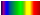

The 2D Density Chart has some settings that are different from all the other charts. These settings are explained in this section.
How does a 2D Density Chart work?
In a 2D Density Chart, the color of each point is determined by how many points are "near" or on top of each other. This amount of points (or density) will correspond with a color in a shader.

In this density plot, contour and cell image layers are added.
In the image above, the points are colored by a rainbow shader. 
You can see that the lowest possible value is white and the highest possible value is red. In regions where there are no points (lowest density), a white color is shown. Regions with more points are colored purple, blue, green, yellow and eventually red (highest density).
This makes the 2D Density Charts useful to distinguish areas containing many data points, whereas a scatter chart would just show a smear of points. A scatter Density Chart combines the best of both features in one layer.
Density chart Settings
To adjust the Density Chart settings, go to the chart legend and click the Adjust settings button 
. The following dialog will pop up:
| Choose a shader | Select the shader you want to use. |
| Lo cut | Select the bottom margin of the window of data that will be used to define the colors. (e.g. If you select a lo cut of 0.1, all data under 10% of the data will be given the lowest color of the shader) |
| Hi cut | Select the upper margin of the window of data that will be used to define the colors. (e.g. If you select a hi cut of 0.9, the 10% of the highest values will be given the highest color value available in the shader) |
| Set blur value | This will add a Gaussian filter to the Density Chart which will blur the image. Increasing the value will increase the blur. The minimum value is 4 and the maximum is 16. This reduces the "raggedness" of the color edges. |
| Set pixel size | This is the size of one point in the chart. Increasing this will result in higher color values as more points will lay on top of each other. This enhances the inspection of low density regions. |
| Select a weight axis | Selecting a weight axis is similar to selecting an auxiliary axis in the scatter charts. When you select a weight axis, the color of the points is not only determined by the amount of points near each other, but also by the value of this weight axis that is represented by a feature. |